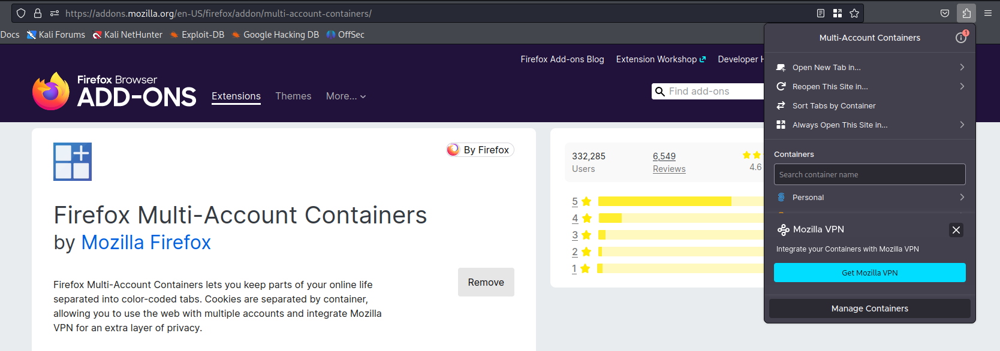

Set up containers for our testing and this allows us to have multiple sessions open and test across different user accounts.
Mentor uses it for testing authorization issues:
to see if we can update Bob's account using Alice's session token.
But here will check if the CSS is indeed stored and not just showing up for the same user that post the payload.
Search Firefox containers
https://addons.mozilla.org/en-US/firefox/addon/multi-account-containers/

We have 4 containers to begin with:
Click Manage Containers and will make 2 containers
On Mentor's Pentest Machine he has
2 low privileged users and
2 high privilege users
We can see the cookie that we have made


Something that you might want to consider is that when testing for cross site scripting you can test for HTML injection first.
That's because HTML injection is more likely to work and than once you find that, you might need to figure out how you can get your cross site scripting payload to work if there's some kind of filtering or some restricted characters.
command: <h1>Test</h1>
we do have html injection here.

command: <script>prompt(1)</script>
Here the page reloaded when we submitted the input it's then rendered to the page and then as the page loads, it's executed.
And to prove that it's stored we can come over to our second container, and click refresh to see it.

command: <script>alert(document.cookie)</script>
will try to alert the cookie in the 2nd container and see the result in the 1st container.
Best Practise is the set the cooikes to HTTP only, which is a flag that prevents JavaScript from accessing your cookie.